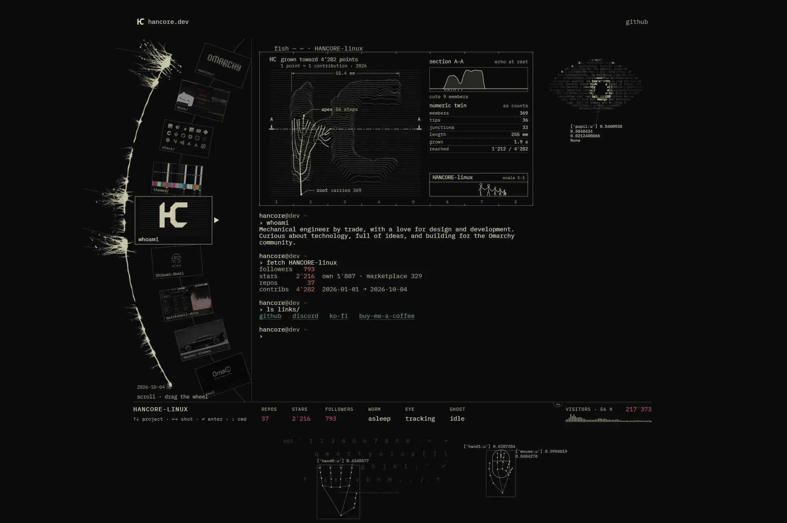

Hancore
- Личные сайты и портфолио
- Разработчик
- Утилитарный техно
- Киберпанк
- Сайт жив

Что это
Портфолио разработчика Hancore: темы, плагины и оболочки для Linux-сборки Omarchy, оформленные как терминал и редактор кода. Вместо карточек — интерактивное древо проектов, живая статистика GitHub и палитры тем; зайти стоит разработчикам, которые любят минималистичные интерфейсы. Иммерсивный сайт-портфолио разработчика тем и плагинов для Linux-сборок, который публикует свои проекты под псевдонимом Hancore. Страница оформлена в виде хакерского футуристичного терминала.
Что смотреть в первую очередь
Смотреть вход Enter ↩ с канвас-интро в редактор: слева вращаемое колесо проектов, справа терминал с README и палитрой темы. Начать стоит с Shibumi-Shell и waybar-themes.
Чем интересен
- Скриншот владельца — более ранняя версия: в кадре терминал fish со статистикой на 4 октября 2026 (793 подписчика, 4'282 контрибуции, 217'373 визита), тогда как живая главная — канвас-«стена кода» с входом Enter ↩ на /site/, а данные обновлены 15 октября (1'317 подписчиков, 4'457 контрибуций, 221'847 визитов).
- Текущий сайт — две HTML-страницы: интро / (canvas, «a quiet wall of code») и редактор /site/ с деревом проектов; sitemap.xml, manifest.json и favicon.ico отдают 404 (иконка — favicon.svg), OG-тегов и JSON-LD нет.
- Контент /site/ собирается из JSON: content.json (8 проектов и 28 палитр тем), themes.json, github-snapshot.json, stack.json и months.json; проекты — темы и плагины Omarchy, крупнейшие waybar-themes (652 звезды), Shibumi-Shell (229) и quickshell-dots (210).
- Метафора терминала держится на деталях: fish-промпт, whoami и fetch HANCORE-linux в старом кадре, вращаемое колесо карточек «scroll · drag the wheel», строка VISITORS с canvas-графиком и панель WORM / EYE / GHOST.
- В профиле GitHub, на который ведёт шапка (rel=me), указаны имя HANCORE, Германия и био про UI/UX и open-source; аккаунт создан 4 сентября 2025.
- Собственный счётчик /api/seen отдаёт JSON: 221'847 визитов с 26 сентября 2026, данные засеяны аналитикой Cloudflare; на странице он рисует гистограмму.
- Публичных контактов, кроме ссылок, нет: почты и телефона на страницах не найдено, юридических страниц тоже; в about — GitHub, Discord, Ko-fi, Buy Me a Coffee и две ссылки на omarchy.org.
Паспорт
- Домен
- hancore.dev
- Тип сайта
- Портфолио
- Категории
- Личные сайты и портфолио
- Подкатегории
- Разработчик
- Для кого
- Разработчикам
- Стиль
- Утилитарный техно, Киберпанк
- Язык
- Английский
- Страна
- Германия
- Автор
- Hancore (HANCORE-linux)
- Год
- 2026
- Добавлен в коллекцию
- 30.10.2026
Палитра
-
#0C0C0C— 95% кадра -
#2F2F2C— 3% кадра -
#585751— 1% кадра -
#828279— 1% кадра -
#C1BFA7— 0% кадра
- Режим
- Тёмная
- Цвет фона
- Нейтральный
Технологии
- Cloudflare
- Cloudflare Web Analytics
- Vanilla JavaScript ES-модули
- Canvas 2D
- Шрифты (Archivo, Instrument Serif, IBM Plex Mono)
- JSON как источник контента
- GitHub REST API